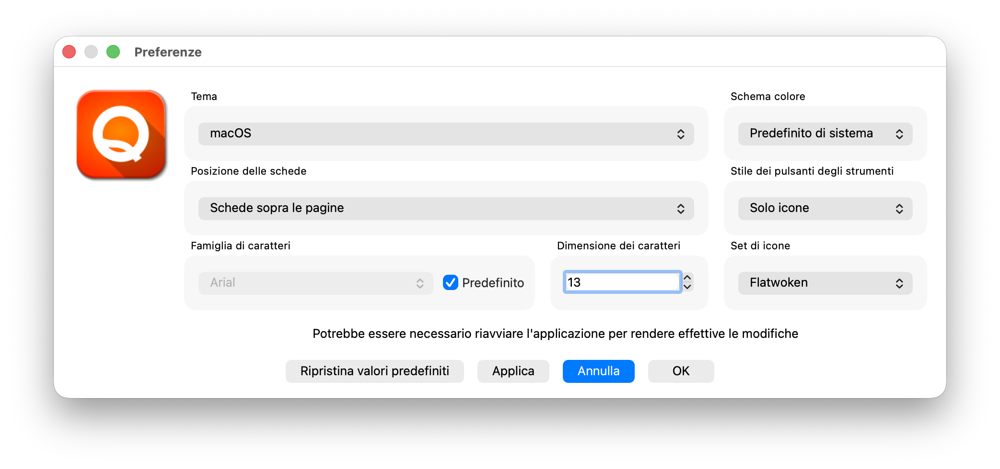

La finestra Preferenze permette di configurare e personalizzare per utente l'aspetto dell'interfaccia del programma

In particolare è possibile modificare questi elementi:
Viene presentato un elenco di temi disponibili che dipende dal sistema operativo utilizzato. Il tema fusion è disponibile su tutti i sistemi operativi e permette di avere un aspetto omogeneo sia che si utilizzi Windows sia che si utilizzi MacOS oppure Linux. In MacOS è disponibile anche il tema nativo macOS oltre al tema windows che segue i canoni estetici del vecchio e superato Window95. In Windows è disponibile il tema windows11 and WindowsVista oltre a fusion. Tutti questi tempi sono forniti direttamente dalle librerie Qt e potrebbero essere modificati oppure averne disponibili altri al cambio di versione delle librerie
Permette di modificare la posizione delle linguette delle schede che si aprono ad esempio accedendo ad archivi od attività. Le opzioni disponibili sono:
Il valore predefinito è Schede sopra le pagine
Permette di modificare il font di base utilizzzato in tutta l'applicazione. La combobox si attiva se non è spuntato Predefinito e visualizza una lista delle famiglie di carattteri disponibili sul sistema in uso
Se spuntato imposta l'utilizzo del font predefinito del sistema e quindi non permete di selezionare un font personalizzato sulla combobox precedente
Permette di impostare la dimensione di base del carattere utilizzato in tutta l'applicazione. Possono esserci dei vincoli dipendenti dal sistema e dal tema in uso per cui non è garantito che la dimensione impostata sia rispettata completamente
In questa combo box è possibile selezionare se utilizare il tema Chiaro, Scuro oppure utilizzare quello Predefinito di sistema ovvero quello scelto a livello di sistema operativo.
In questa combobox è possibile selezionare il comportamento visivo della toolbar presente normalmente in alto sotto i menu. Le opzioni disponibili sono:
Il valore predefinito è Solo icone
In questa combo box è possibile selezionare uno dei set di icone disponibili in tutti i sistemi operativi ed utilizzati principalemtne per tasti ma anche come identificativo di varie dialog box tipo questa
Sono disponibili i seguenti set:
Il tema predefinito è Oxygen. Tutti i temi sono liberamente disponibili e sono stati scaricati dal sito iconarchive.com.